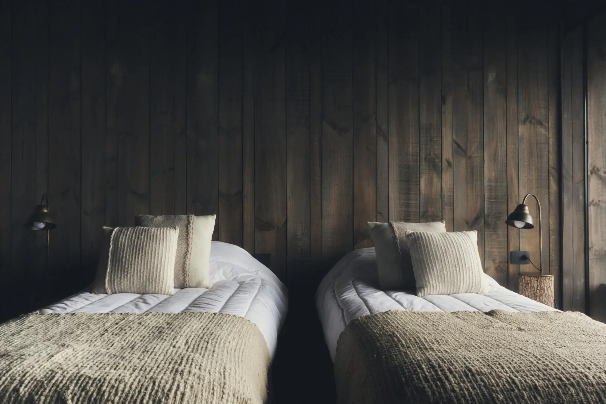
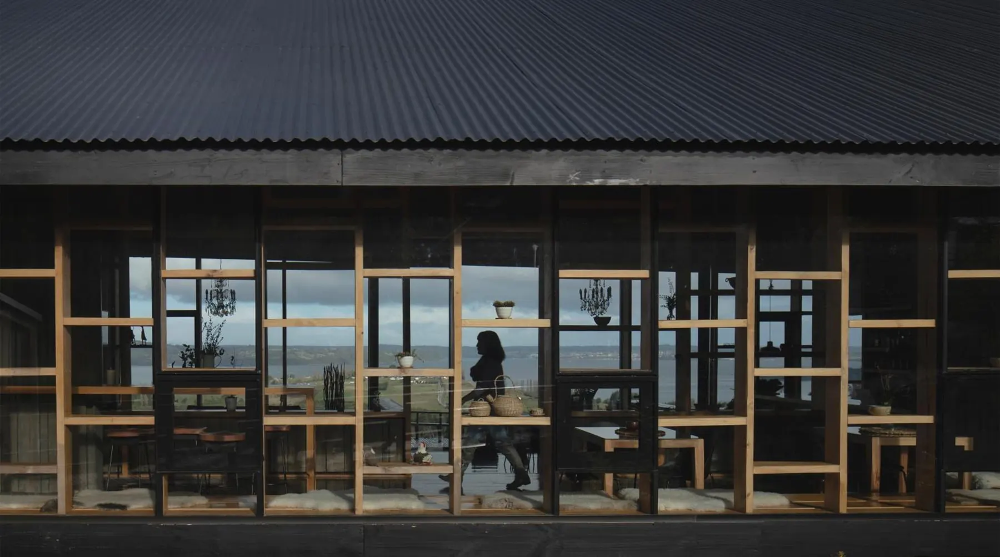
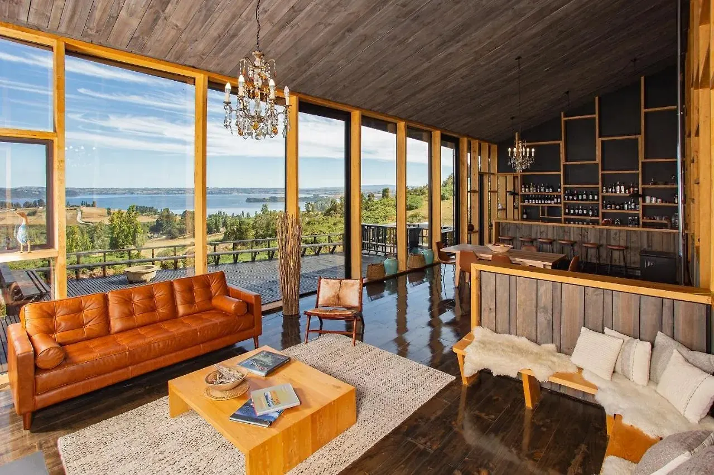

RILÁN
Bienvenidos al misticismo del archipiélago. Welcome to the mysticism of the archipelago.
A secluded hotel on the Rilán Peninsula
Within a UNESCO World Heritage landscape
42° 32' 55" S 73° 43' 16" O
DescenderScrollAl sur del mundo, una isla donde el tiempo sigue un ritmo propio. At the edge of the world, an island where time follows a rhythm of its own.
La madera, el fuego, el patrimonio, el silencio. Wood, fire, heritage, silence.
Aquí, el misticismo del archipiélago se revela lentamente, moldeado por la tierra, el mar y siglos de tradición. Here, the mysticism of the archipelago unfolds slowly, shaped by the land, the sea, and centuries of tradition.
Bienvenidos a RILÁNWelcome to RILÁN

Territory
42° 32' 55" S 73° 43' 16" O
Chilwe es territorio antes que destino. Chilwe is territory before it is a destination.
Una geografía marcada por su bordemar, por el bosque, por el agua y por las personas que han aprendido a vivir con él, a través de él y dentro de él. A geography shaped by its bordemar, by the forest, by the water, and by the people who have learned to live with it, through it, and within it.

Perderse en los senderos de RILÁN es otra forma de entrar en el bosque. Getting lost along the trails of RILÁN is another way of entering the forest.
Caminar sin apuro, dejar que el camino cambie, seguir la humedad, la madera y la luz entre los árboles. Aquí, perderse también es una forma de retornar. Walking without hurry, letting the path change, following the damp earth, the wood, and the light between the trees. Here, getting lost is also a way of returning.


El bosque guarda su propio ritmo.The forest holds its own rhythm.
En Chilwe, la naturaleza es más que paisaje. Es memoria, presencia y una forma de retornar.In Chilwe, nature is more than landscape. It is memory, presence and a way of returning.


Mysticism
The more intimate, atmospheric and contemplative side of Chiloé. Sunsets, silence, fire, mist, changing skies, nature and those moments that feel almost suspended in time. A sense of mystery, warmth and connection with the island.
42° 32' 55" S 73° 43' 16" O

El silencio aquí tiene capas.Silence here has layers.
El viento, las aves, la madera, el agua, el bosque. The wind, the birds, the wood, the water, the forest.
En RILÁN, quedarse en silencio es una forma de escuchar lo que aparece cuando todo se aquieta. In RILÁN, staying still is a way of hearing what appears when everything becomes quiet.
Chilwe también se escucha.Chilwe can also be heard.
Bajo la superficie, el archipiélago tiene su propio paisaje sonoro. Estos registros, compartidos por el investigador y ecólogo marino Francisco Viddi, nos permiten escuchar el paisaje submarino de Chiloé y percibir otra dimensión del territorio. Beneath the surface, the archipelago has a soundscape of its own. These recordings, shared by marine ecologist and researcher Francisco Viddi, allow us to listen to the underwater landscape of Chiloé and perceive another dimension of the territory.
Registro sonoro: Francisco ViddiSound recording: Francisco Viddi

Refuge
42° 32' 55" S 73° 43' 16" O
Un refugio no pide dejar el mundo atrás. A refuge does not ask us to leave the world behind.
Solo tomar la distancia suficiente para volver a mirarlo de otra manera. RILÁN es un lugar desde donde mirar hacia afuera y, en silencio, volver hacia adentro. Only to step far enough from it to see it differently. RILÁN is a place to look outward, and, quietly, back within.


En RILÁN, la madera crea esa sensación de estar protegido sin dejar de pertenecer al paisaje. Está en los muros, en los pisos, en el aroma y en la temperatura de cada espacio. In RILÁN, wood creates the feeling of being protected while remaining connected to the landscape. It is present in the walls, the floors, the scent, and the temperature of each space.
Un refugio construido con la misma materia que lo rodea. A shelter made from the same material as its surroundings.
- HabitacionesRooms
- 8
- SuperficieSize
- 30 m²
- VistaView
- Al mar, con balcónSea, with balcony
- CamaBed
- King o dos individualesKing or twin




RILÁN es un refugio para otro ritmo. RILÁN is a refuge for another rhythm.
Fuego, silencio y paisaje construyen la estadía, hasta generar esa extraña sensación de estar lejos y, al mismo tiempo, haber vuelto a casa. Fire, silence and landscape shape the stay, creating that rare feeling of being far away and somehow already at home.
RILÁN by Rucalaf
Una cocina profundamente arraigada al lugar, donde el mar y su herencia encuentran su camino hasta la mesa. A cuisine deeply rooted in place, where the sea and its heritage find their way to the table.
Proveniente de nuestro territorio. Llega al hotel de la mano de Rucalaf, nuestro aliado culinario, desde una forma compartida de entender la cocina como una manera de honrar la tierra, el mar y los saberes transmitidos por generaciones. From our territory. Brought to the hotel by Rucalaf, our culinary partner, and shaped by a shared understanding of cooking as a way of honouring the land, the sea and the knowledge passed down through generations.
Solo cena · Se coordina cada día hasta las 15:30 hDinner only · Arranged daily until 3:30 pm


Una recolección de la isla, para ti.A collection gathered from the island, for you.
Explora nuestro territorio a través de nuestra coctelería de autor. Una serie de preparaciones pensadas para descubrir el paisaje de RILÁN y los ingredientes que crecen en él. Explore our territory through our signature cocktails. A series of preparations created to discover the landscape of RILÁN and the ingredients that grow within it.


La cavaThe wine cellar
“…una cava especial por su diseño muy particular…”
“Die Auswahl an Weinen ist enorm.”
“…the fantastic wine cellar and the fantastic hosts.”
The Long Table
Una mesa larga, abierta a todos. Una forma de encontrarse con Chiloé desde la cocina, el territorio y el tiempo.
Íntima, sin apuros y con todos los sentidos
- A cargo de La Lancha Chilota
- 13:00 h · Sábado 10 de octubre
- Valor por persona$70.000
- Quédate esta noche en RILÁN 15% de dcto. en tarifa de habitación para asistentes


Heritage
42° 32' 55" S 73° 43' 16" O
Patrimonio Mundial de la UNESCO, las iglesias de Chiloé son testimonio de una arquitectura única, nacida de la madera, el oficio y el tiempo. A UNESCO World Heritage Site, the churches of Chiloé bear witness to a unique architectural tradition shaped by wood, craftsmanship, and time.


La madera atraviesa la historia del archipiélago.Wood is woven into the history of the archipelago.
Fue casa, iglesia, bote, herramienta, calor y refugio. Aprender a trabajarla fue también aprender a vivir en este territorio. It was home, church, boat, tool, warmth and shelter. Learning to work with wood was also learning how to live in this territory.




Mónica y RodrigoMónica & Rodrigo
9,5Excepcional · 99 comentarios en Booking.comExceptional · 99 reviews on Booking.com
Reseñas reales de huéspedes, vía Booking.comReal guest reviews, via Booking.com
Cómo llegarGetting here
42° 32' 55" S 73° 43' 16" O
La Estancia s/n, Península de Rilán
Castro, Chiloé, Chile
- Castro
- 8 km
- Iglesia de RilánRilán church
- 11 km
- Aeropuerto MocopulliMocopulli airport
- 28–37 km
Traslado al aeropuerto disponible.Airport transfer available.
Abrir en Google MapsOpen in Google Maps
Deja que el tiempo pierda su medida en RILÁN. Let time lose its measure in RILÁN.
- Check-in
- 14:00 – 22:00
- Check-out
- 8:30 – 12:00
- HuéspedesGuests
- Solo adultos · sin mascotasAdults only · no pets
- ClimaClimate
- Habitaciones con calefacción y ventilador, sin aire acondicionadoRooms with heating and fan, no air conditioning